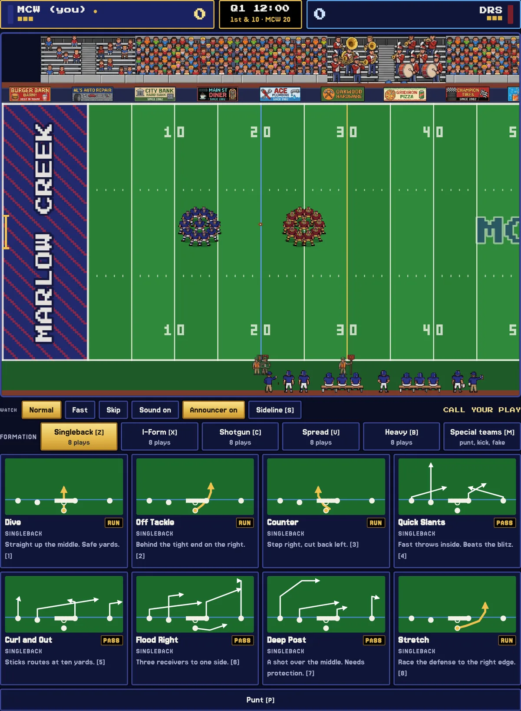
Call the plays
Start with a 40-play book across five formations. Pick the formation, then the play: run it inside, stretch it wide or throw it deep.
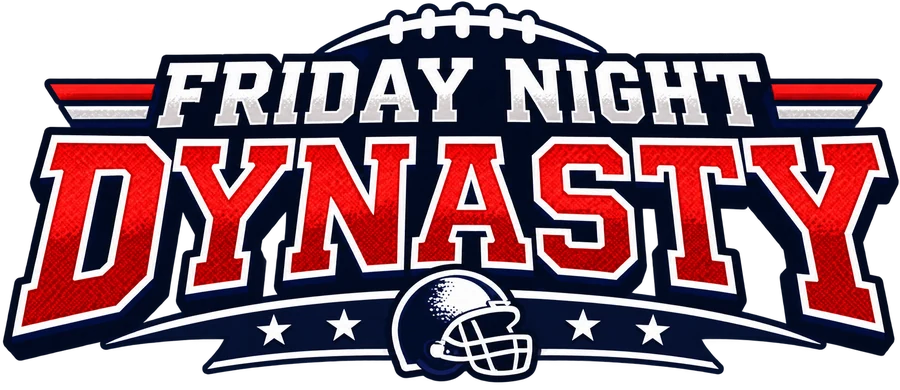
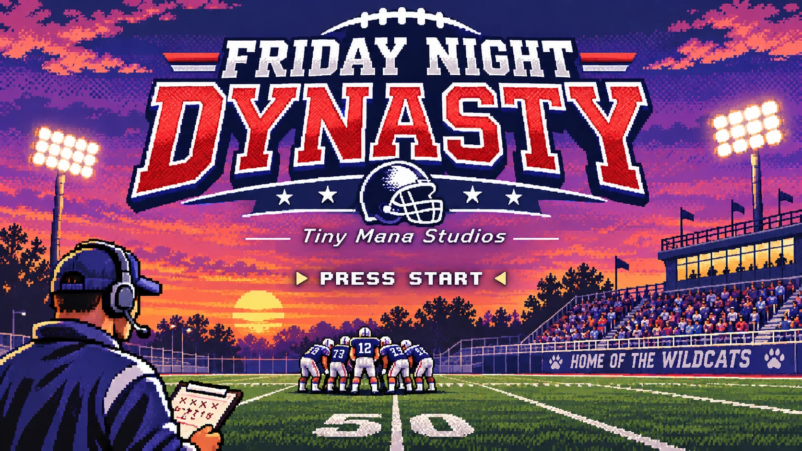
Free in your browser · Mouse, keyboard or touch · You call the plays, your players carry them out
Tip: click the game once so it can hear your keyboard. Number keys pick a play.
What is in the game today.

Start with a 40-play book across five formations. Pick the formation, then the play: run it inside, stretch it wide or throw it deep.

Five fronts and eight calls make 40 defenses. Stuff the run, sit in Cover 2, send a zone blitz. Guess right and your defense gets the edge.
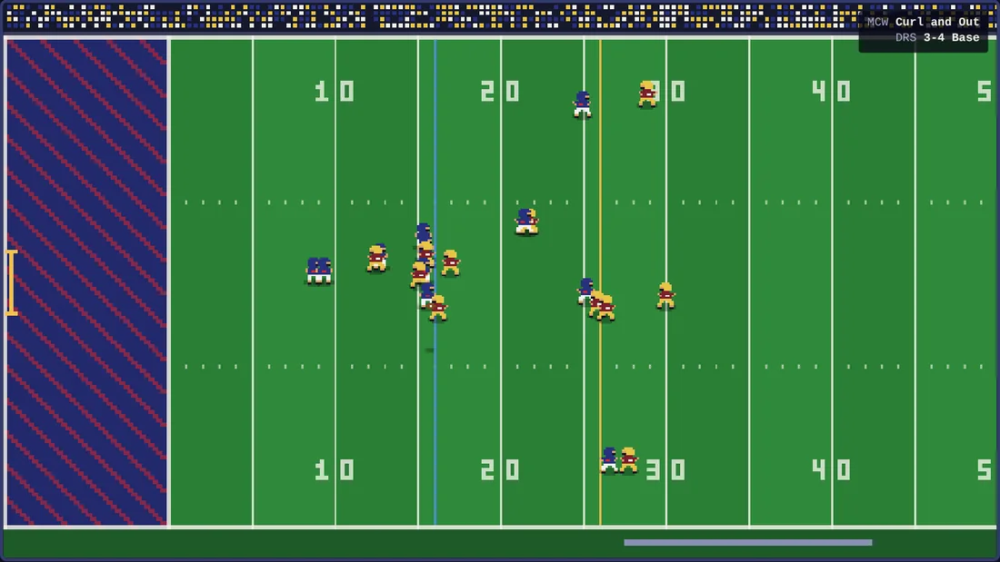
All 22 players run the play on the field. Watch at normal speed, fast, or skip ahead. Big plays get a replay.
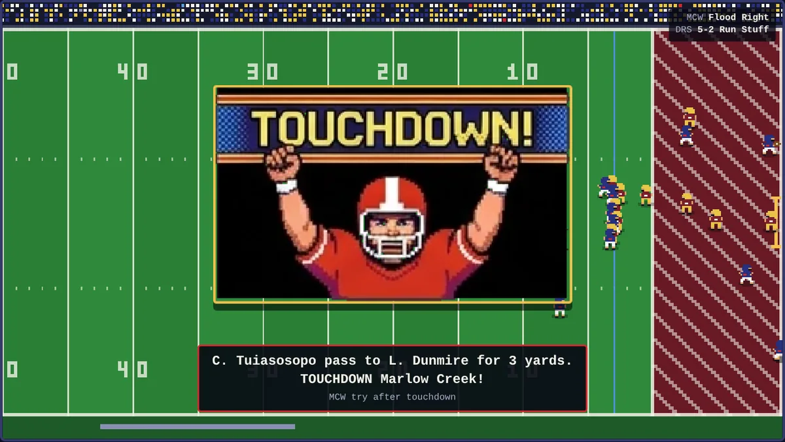
Touchdowns, picks, sacks and kicks get their own cut-in. Rain, wind, snow and heat change how the ball is thrown, kicked and held on to.
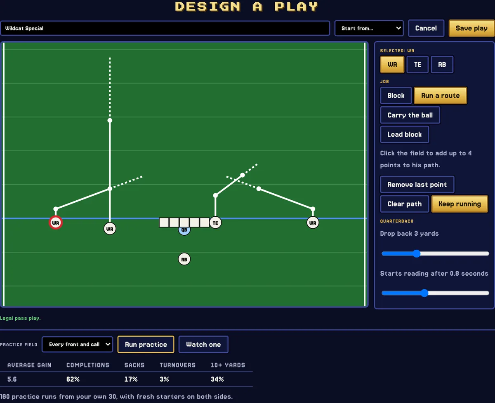
Line up your eleven, draw the routes, and run it on the practice field. Design defenses too. Your plays go in your book and into online games.
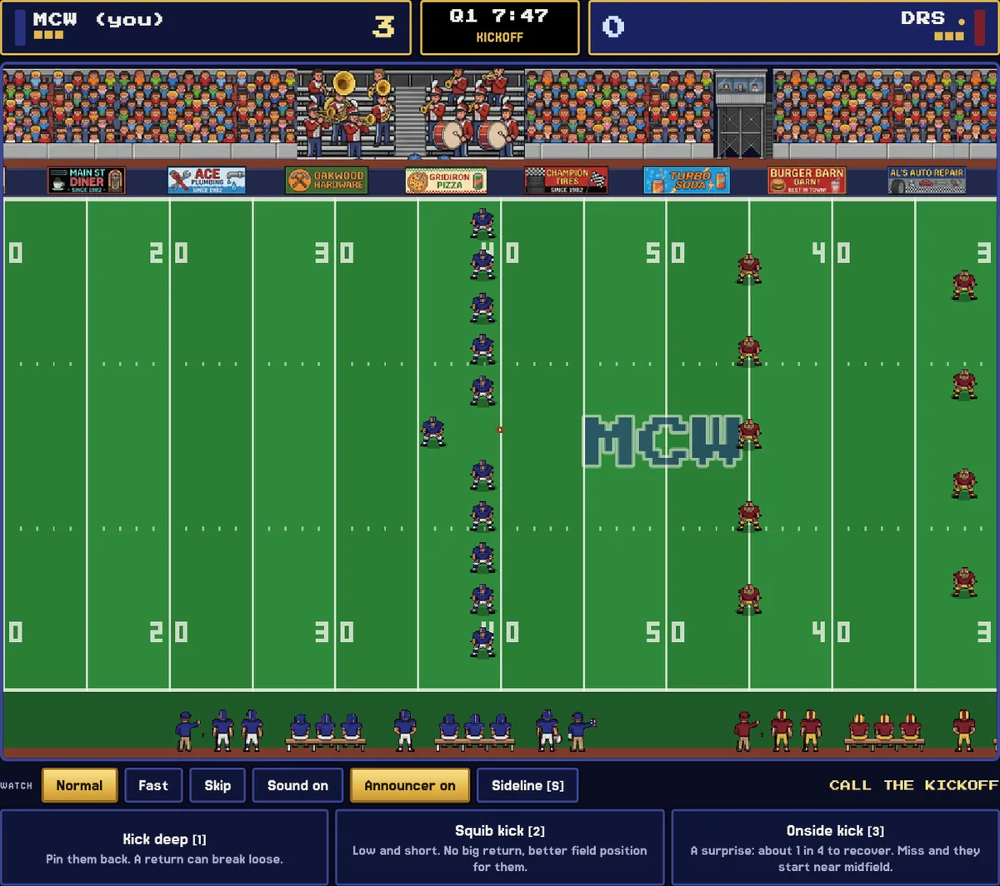
Kick it deep, squib it or try the onside kick. On fourth down the defense can sell out for the block, and a fake makes them pay.
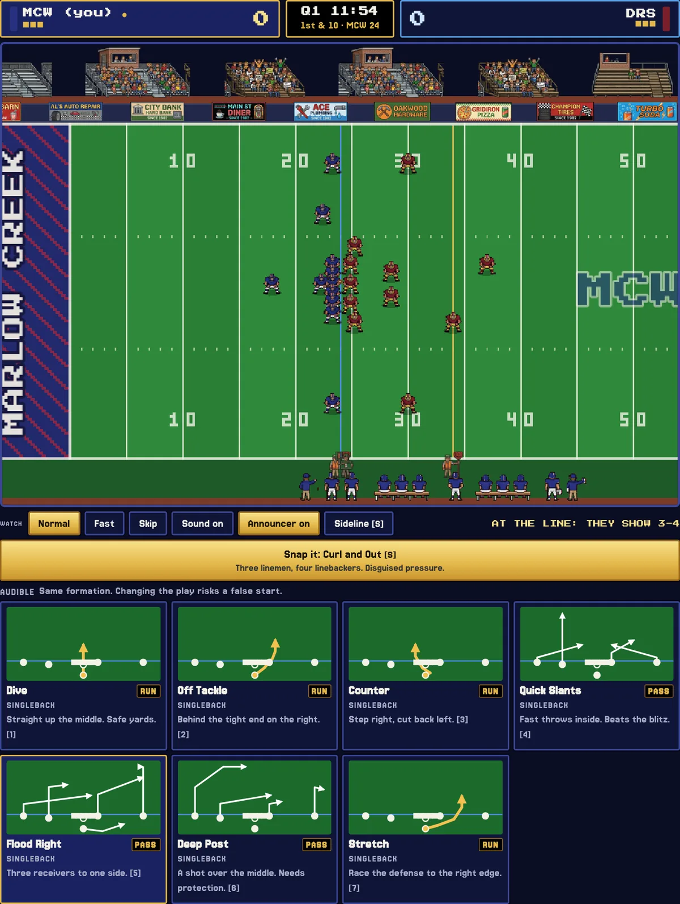
Your offense breaks the huddle and the defense shows its front. Snap it, or audible to another play from the same formation.
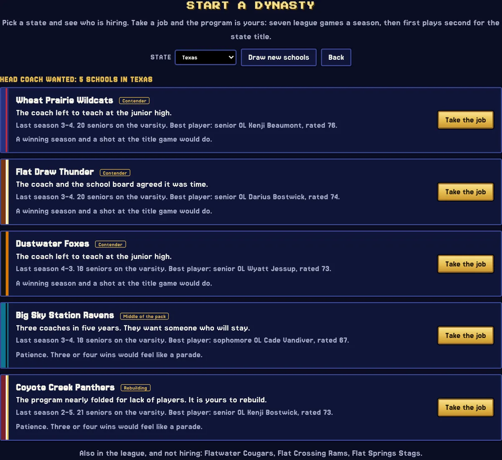
Pick any of the fifty states and see which schools are hiring. Each posting tells you why the job is open and what the boosters expect.
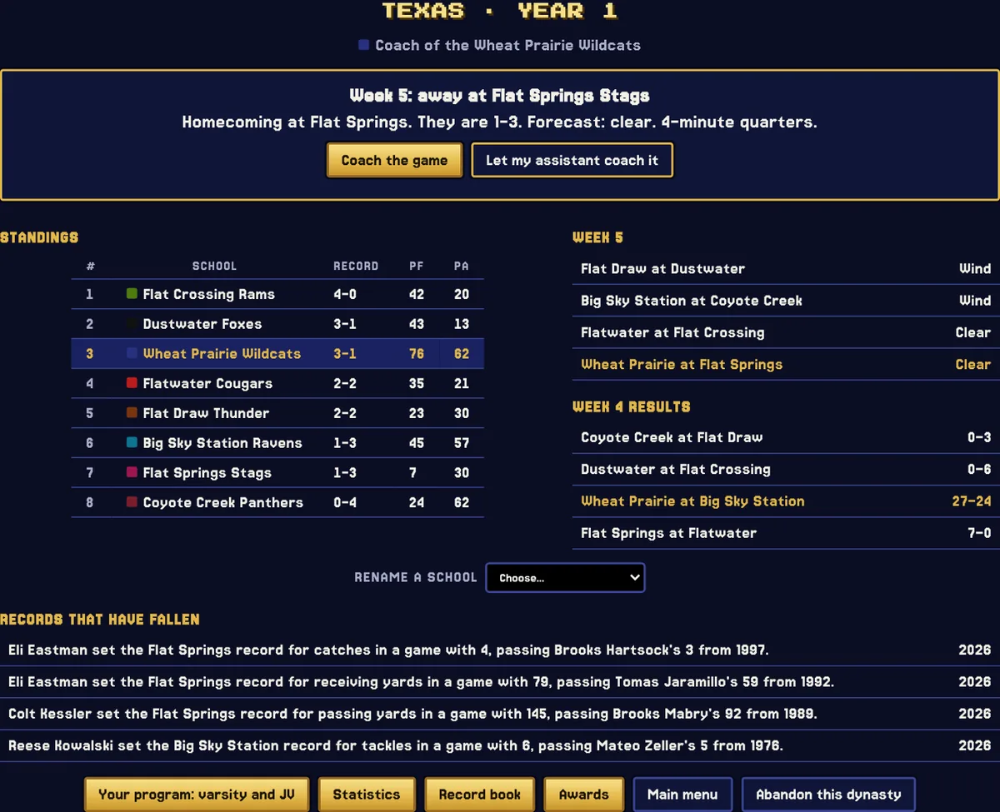
Seven league games a season, then the state final. Homecoming, senior night, awards, and a trophy case that fills up year after year.
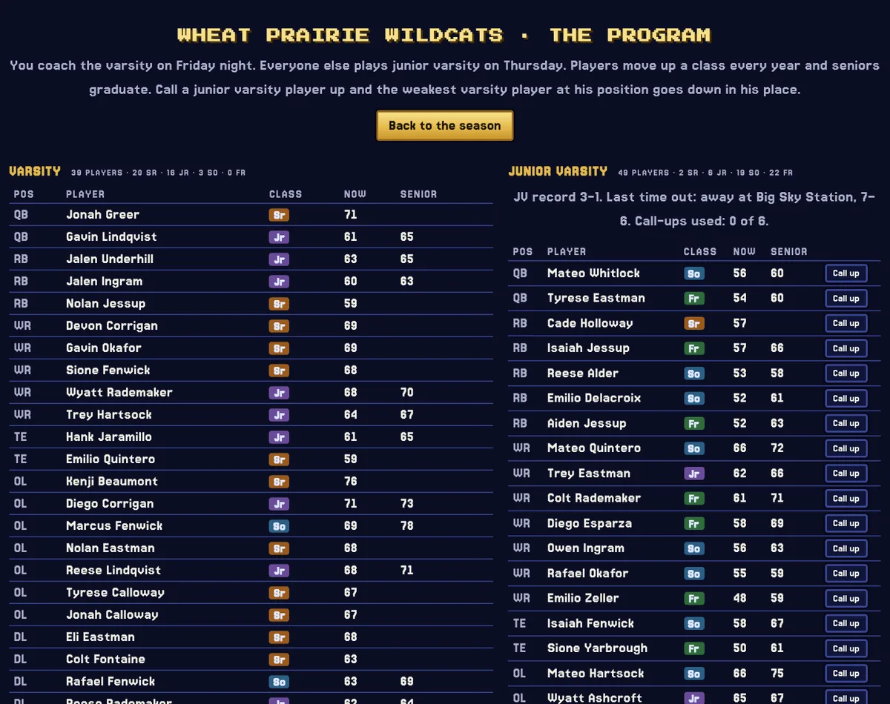
Freshmen become seniors and graduate. Coach the varsity, watch the junior varsity, and call a kid up when he is ready.
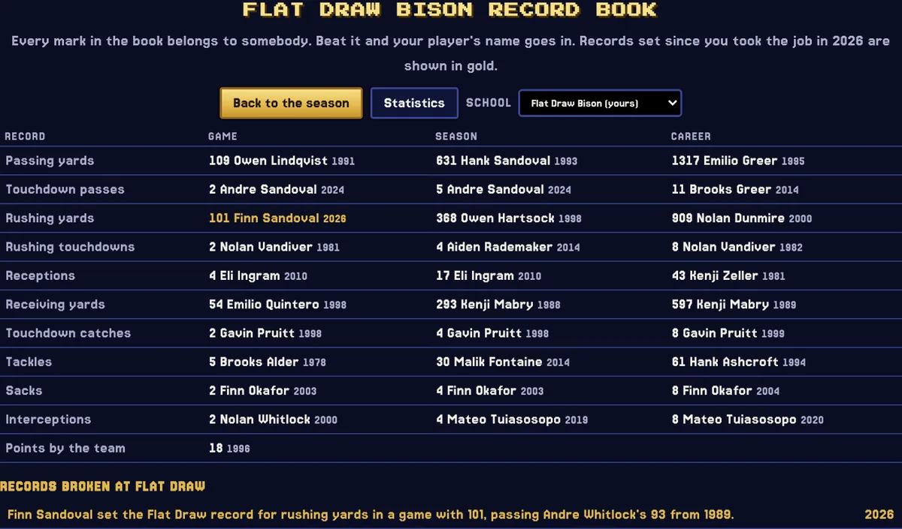
Every school has fifty years of records. Break one and your player's name goes in the book, called on the field the moment it falls.
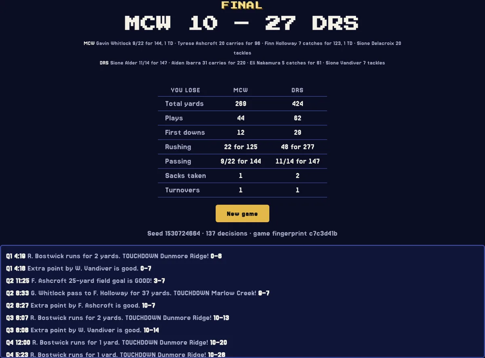
Host a game, share the five-digit PIN, and talk trash over voice chat. Your record goes on your coach profile and the Hall of Fame.
Where the game is headed, in build order. Friends coaching rival schools in your dynasty is the goal the whole plan points at.
What changed, newest first.
Loading…